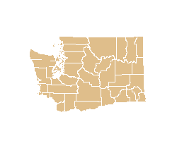

- View Interactive Map
- Maps and text covering the historical boundaries, names, organization, and attachments of every county, extinct county, and unsuccessful county proposal from the creation of the first county through 31 December 2000. Choose a date (day, month, and year) to view historical county configurations against the modern county network. Use the toolbar to zoom, pan, measure, view descriptions and citations, or print a desired map. Use the Help button on top right of the interactive map frame to read full descriptions of how to use the layers and tools on the interactive map site.
- View Index of Counties and Equivalents
- Complete index of every county, county equivalent, or other area relevant to the evolution of evolution of state and county boundaries; includes extinct and proposed counties, non-county areas, and provides cross references for name changes, and hyperlinks to corresponding entries from the Individual County Chronologies. Also accessible from the County Index link at the bottom of the interactive map frame.
- View Consolidated Chronology of State and County Boundaries
- Organizes the historical data chronologically, combining all the county events into a single composite entry for each date. Each entry is followed by a citation to the primary source(s) used to determine the change. Also accessible from the Chronologies link at the bottom of the interactive map frame.
- View Individual County Chronologies
- Organizes the historical data alphabetically by county name with each entry covering all the changes to a single county or equivalent. Each entry is followed by a citation to the primary source(s) used to determine the change. Also accessible from the Chronologies link at the bottom of the interactive map frame.
- View Bibliography and Sources
- Lists the primary and secondary sources found useful in the historical research of territorial, state, and county boundaries. Also accessible from the Supplemental Texts link at the bottom of the interactive map frame.
- View Historical Commentary
- Commentary on the research problems, materials and dates that were remarkable or unusual in the process of historical compilation (Not every state requires a commentary). Also accessible from the Supplemental Texts link at the bottom of the interactive map frame.
- View Metadata - Summary Form
- Single-page document providing information about the shapefile data used for the interactive map site and available for download. Includes: Project Description, Preferred Style for Citation, and Spatial Reference Information. Also available from the dropdown Quick Link in the navigation menu on each page, and from the Supplemental Texts link at the bottom of the interactive map frame.
- View Metadata - Full FGDC Form
- Sixteen-page document providing complete information about the shapefile data used for the interactive map site and available for download. Includes: Identification and Citation Information (abstract of the project coverage, purpose, contents, and method of historical compilation), Data Quality Information (attribute and positional accuracy, historical and digital sources, step-by-step process descriptions), Spatial Data Organization Information, Spatial Reference Information, Entity and Attribute Information, Distribution and Metadata Reference Information. Also accessible from the Download Shapefiles page.
- Download Shapefiles for use with GIS Programs (zip file)
- Full contents of the Atlas of Historical County Boundaries may be downloaded free of charge for use under the stipulations and constraints described in the Creative Commons License. Downloads a zipped folder containing the full dataset for the desired state. Contents include:
- Historical Counties Shapefile (polygons) for all versions of the state's counties and county equivalents
- Small_Changes shapefile (point feature) for all changes too small to map otherwise [not all states include this file]
- Comprehensive Database (tab-delimited text file) for all historical data mapped and not mapped
- Copies of all the historical chronologies, supplemental texts, and metadata forms listed above
- Copy of the free access Attribution-NonCommercial-ShareAlike Creative Commons License
- Download KMZ File for use with Google Earth (zip file)
- Downloads a zipped folder containing Atlas data formatted to be used with Google Earth and Google Maps.
- Download PDF File (zip file)
- Downloads a zipped folder containing Atlas data for each county in a state formatted in a printer and reader friendly format.
Washington
State Page

39 Counties


- Atlas of Historical County Boundaries
- Last updated: June 2011
- Contact us: Scholl Center | scholl [at] newberry.org